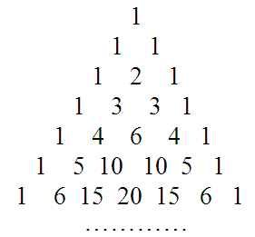
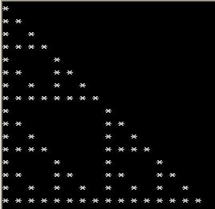
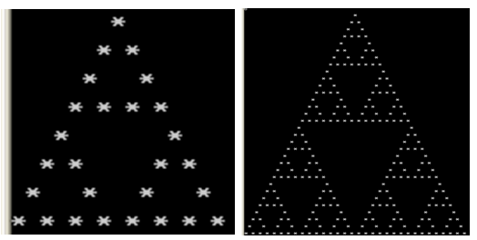
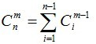

杨辉三角是二项式系数在三角形中的一种几何排列，中国南宋数学家杨辉1261年所著的《详解九章算法》一书中出现。在欧洲，帕斯卡（1623~1662）在1654年发现这一规律，所以这个表又叫做帕斯卡三角形。帕斯卡的发现比杨辉要迟393年。
如果将(a+b)n(n为非负整数)的每一项按字母a的次数由小到大排列，就可以得到下面的等式：
(a+b)0=1 ， 它只有一项，系数为1；
(a+b)1=a+b ，它有两项，系数分别是1，1；
(a+b)2=a2+2ab+b2，它有三项，系数分别是1，2，1；
(a+b)3=a3+3a2b+3ab2+b3，它有四项，系数分别是1，3，3，1；
……
由此，可得下面的图表，这个图表就是杨辉三角形。

观察上图表，我们发现每一行的首末都是1，并且下一行的数比上一行多1个，中间各数都写在上一行两数中间，且等于它们的和，可以按照这个规律继续将这个表写下去。
【例1】杨辉三角形。
输入n（1<=n<=30)，输出杨辉三角形的前n行。
（1）编程思路1。
用一个二维数组 y[31][31] 来保存杨辉三角形每一行的值。杨辉三角形第row行可以由第row－1行来生成。
例如：
|
数组元素 |
Y[row][1] |
Y[row][2] |
Y[row][3] |
Y[row][4] |
Y[row][5] |
|
Row=4行 |
1 |
3 |
3 |
1 |
0 |
|
Row=5行 |
1 |
4 |
6 |
4 |
1 |
由上表知：当row＝5时， y[5][1] = 1，
y[5][2] = y[4][1] + y[4][2]， y[5][3] = y[4][2] + y[4][3]，
y[5][4] = y[4][3] + y[4][4] ， y[5][5] = y[4][4] + y[4][5]
一般的，对于第row（1～30）行，该行有row＋1个元素，其中：
y[row][1]=1
第col（2～row+1)个元素为： y[row][col] = y[row-1][col-1] + y[row-1][col]。
（2）源程序1。
#include <stdio.h>
int main()
{
int n,i,j,y[31][31]={0};
for (i=1;i<=30;i++) // 赋行首与行尾元素值为1
y[i][1]=y[i][i]=1;
for (i=3;i<=30;i++) // 每行中间元素赋值
for (j=2;j<i;j++)
y[i][j]=y[i-1][j-1]+y[i-1][j];
while (scanf("%d",&n)!=EOF)
{
for (i=1;i<=n;i++)
{
for (j=1;j<=i;j++)
{
if (j!=1) printf(" ");
printf("%d",y[i][j]);
}
printf("\n");
}
printf("\n");
}
return 0;
}
（3）编程思路2。
用一个一维数组 y[30] 来保存杨辉三角形某一行的值。杨辉三角形第row行可以由第row－1行来生成。
例如：
|
数组元素 |
Y[0] |
Y[1] |
y[2] |
Y[3] |
Y[4] |
|
Row-1=3行 |
1 |
3 |
3 |
1 |
0 |
|
Row=4行 |
1 |
4 |
6 |
4 |
1 |
由上表知：当row＝4时，y[4] = y[4]+y[3]， y[3] = y[3]+y[2]，
y[2] = y[2]+y[1] ， y[1] = y[1]+y[0]，
y[0]=1
一般的，对于第row（0～9）行，该行有row＋1个元素，
第col（row～1)个元素为： y[col]=y[col]+y[col-1]，
y[0]=1
（4）源程序2。
#include <stdio.h>
#include <string.h>
int main()
{
int y[30],row,col,n;
while (scanf("%d",&n)!=EOF)
{
memset(y,0,sizeof(y)); // 数组元素初始化为0
y[0]=1;
printf("%d\n",y[0]);
for (row=1;row<n;row++)
{
for (col=row;col>=1;col--)
y[col]=y[col]+y[col -1];
for (col=0;col<=row;col++)
{
if (col!=0) printf(" ");
printf("%d",y[col]);
}
printf("\n");
}
printf("\n");
}
return 0;
}
将上面的两个源程序提交给HDU 2032“杨辉三角”，均可以Accepted。
下面我们进一步讨论一下杨辉三角形。
我们根据杨辉三角形前16行中每个数的奇偶性决定是否输出一个特定字符。比如如果是奇数，输出一个“*”号；是偶数，输出一个空格。编写如下的程序：
#include <stdio.h>
int main()
{
int n,i,j,y[17][17]={0};
for (i=1;i<=16;i++) // 赋行首与行尾元素值为1
y[i][1]=y[i][i]=1;
for (i=3;i<=16;i++) // 每行中间元素赋值
for (j=2;j<i;j++)
y[i][j]=y[i-1][j-1]+y[i-1][j];
for (i=1;i<=16;i++)
{
for (j=1;j<=i;j++)
if (y[i][j]%2==1) printf("* ");
else printf(" ");
printf("\n");
}
return 0;
}
运行上面的程序，可以得到如下的运行结果。

运行结果的图形是一个递归深度为4的三角形。 通过这个图形，我们感觉杨辉三角形中每个数字的奇偶应该满足一定的规律。
组合数C(n,m)是指从n个元素中选出m个元素的所有组合个数。其通用计算公式为：
C(n,m)=n!/[m!*(n-m)!] C(0,0)=1 C(1,0)=1 C(1,1)=1
从n个元素中取m个元素，考虑第n个元素，有两种情况：（1）不取。则必须在前n-1个元素中取m个元素，方案数为C(n-1,m)；（2）取。则只需在前n-1个元素中取m-1个元素，方案数为C(n-1,m-1)。因此， C(n,m)=C(n-1,m)+C(n-1,m-1)
这正好符合杨辉三角形的递推公式。 即 杨辉三角中第i行第j列的数字正是C（i,j）的结果。因此，下面对杨辉三角形中各行各列数字的讨论转化为对组合数C(n,m)的讨论。
【例2】组合数的奇偶性。 （POJ 3219）
二项式系数C(n, m)因它在组合数学中的重要性而被广泛地研究。二项式系数可以如下递归的定义：
C(1, 0) = C(1, 1) = 1；
C(n, 0) = 1 对于所有n > 0；
C(n, m) = C(n-1, m-1) + C(n-1, m) 对于所有0 < m ≤ n。
给出n和k，确定C(n, m)的奇偶性。
（1）编程思路1。
对于给定C(n,m)，检查n！中2因子的个数与m！和(n-m)！中2因子个数和的关系，假设n!中2因子个数为a，m!中2因子个数为b，(n-m)!中2因子个数为c，则显然有a>=(b+c)；并且当a==b+c时，一定为奇，否则为偶。
（2）源程序1。
#include <stdio.h>
int getTwo(int x) // x!中2的因子的个数
{
int cnt=0;
while (x/2!=0)
{
cnt += x/2;
x=x/2;
}
return cnt;
}
int main()
{
int n,k;
while (scanf("%d%d", &n,&k)!=EOF)
{
if (getTwo(n)-getTwo(k)-getTwo(n-k)>0)
printf("0\n");
else
printf("1\n");
}
return 0;
}
（3）编程思路2。
前面通过杨辉三角形中数字的奇偶性输出“*”图时，我们感觉其数字的奇偶性与数字所在的行号和列号有一定的关系，即组合数C(n,m)的奇偶性与n和m有对应关系。
根据网络上的资料，给出结论如下：
组合数的奇偶性判定方法为:
对于C(n,m)，若n&m == m 则C(n,m)为奇数，否则为偶数。
证明： // 下面的证明采用数学归纳法，如果没兴趣，跳过即可，知道结论好了！
由C(n,m) = C(n-1,m) + C(n-1,m-1);
对应于杨辉三角：
1
1 2 1
1 3 3 1
1 4 6 4 1
………………
可以验证前面几层及m = 0时满足结论，下面证明在C(n-1,m)和C(n-1,m-1) (m>0) 满足结论的情况下，C(n,m)满足结论。
1）假设C(n-1,m)和C(n-1,m-1)为奇数：
则有：(n-1)&m == m;
(n-1)&(m-1) == m-1;
由于m和m-1的最后一位（在这里的位指的是二进制的位，下同）必然是不同的，所以n-1的最后一位必然是1。
现假设 n&m == m。
则同样因为n-1和n的最后一位不同推出m的最后一位是1。
因为n-1的最后一位是1，则n的最后一位是0，所以n&m != m，与假设矛盾。
所以得 n&m != m。
2）假设C(n-1,m)和C(n-1,m-1)为偶数：
则有：(n-1)&m != m;
(n-1)&(m-1) != m-1;
现假设n&m == m.
则对于m最后一位为1的情况：
此时n最后一位也为1，所以有(n-1)&(m-1) == m-1，与假设矛盾。
而对于m最后一位为0的情况：
则m的末尾必有一部分形如：10; 代表任意个0。
相应的，n对应的部分为： 1{*}*; *代表0或1。
而若n对应的{*}*中只要有一个为1，则(n-1)&m == m成立，所以n对应部分也应该是10。
则相应的，m-1和n-1的末尾部分均为01,所以(n-1)&(m-1) == m-1 成立，与假设矛盾。
所以得 n&m != m。
由1)和2)得出当C(n,m)是偶数时，n&m != m。
3）假设C(n-1,m)为奇数而C(n-1,m-1)为偶数：
则有：(n-1)&m == m;
(n-1)&(m-1) != m-1;
显然，m的最后一位只能是0，否则由(n-1)&m == m即可推出(n-1)&(m-1) == m-1。
所以m的末尾必有一部分形如：10;
相应的，n-1的对应部分为： 1{*}*;
相应的，m-1的对应部分为： 01;
则若要使得(n-1)&(m-1) != m-1 则要求n-1对应的{*}*中至少有一个是0.
所以n的对应部分也就为 ： 1{*}*; (不会因为进位变1为0)
所以 n&m = m。
4).假设C(n-1,m)为偶数而C(n-1,m-1)为奇数：
则有：(n-1)&m != m;
(n-1)&(m-1) == m-1;
分两种情况：
当m-1的最后一位为0时:
则m-1的末尾必有一部分形如: 10;
相应的，m的对应部分为 : 11;
相应的，n-1的对应部分为 : 1{*}0; (若为1{*}1,则(n-1)&m == m)
相应的，n的对应部分为 : 1{*}1;
所以n&m = m。
当m-1的最后一位为1时:
则m-1的末尾必有一部分形如: 01; (前面的0可以是附加上去的)
相应的，m的对应部分为 : 10;
相应的，n-1的对应部分为 : 01; (若为11，则(n-1)&m == m)
相应的，n的对应部分为 : 10;
所以n&m = m。
由3),4)得出当C(n,m)为奇数时，n&m = m。
综上，结论得证!
（4）源程序2。
#include <stdio.h>
int main()
{
int n,k;
while (scanf("%d%d", &n,&k)!=EOF)
{
if ((n&k)==k)
printf("1\n");
else
printf("0\n");
}
return 0;
}
根据组合数的奇偶性判定方法: 对于C(n,m)，若n&m == m 则C(n,m)为奇数，否则为偶数。
可以写出如下一个程序。
#include <stdio.h>
int main()
{
int n,i,j;
while (scanf("%d",&n) && n!=0)
{
for (i=0;i<(2<<(n-1));i++)
{
for (j=0;j<=i;j++)
if ((i&j)==j) printf("* ");
else printf(" ");
printf("\n");
}
}
return 0;
}
运行这个程序，输入4，可以得到前面所示的星号图形。有一次，我在网上随意浏览时，发现上面这个程序，当时觉得有些奇妙，有些小神奇。因为，要输出一个递归形式的星号图形，我习惯性地采取递归的方法。例如，为达到上面程序的功能，根据输入的n，输出相应的递归图形，我会编写如下的程序：
#include <stdio.h>
#define N 64
void draw(char a[][N], int n, int row, int col)
{
if(n==1)
{
a[row][col] = '*';
return;
}
int w = 1;
int i;
for(i=1; i<=n-2; i++) w *= 2;
draw(a, n-1, row, col);
draw(a, n-1, row+w, col+w);
draw(a, n-1, row+w,col);
}
int main()
{
char a[N][N];
int n,w,i,j;
while (scanf("%d",&n) && n!=0)
{
for(i=0;i<N;i++)
for(j=0;j<N;j++)
a[i][j] = ' ';
w=1;
for(i=1; i<=n-1; i++) w *= 2;
draw(a,n,0,0);
for(i=0; i<w; i++)
{
for(j=0; j<w; j++)
printf("%c ",a[i][j]);
printf("\n");
}
}
return 0;
}
一个简单的二重循环即可完成递归图形的描绘，我当时还琢磨半天，怎么会这样？怎么想出来的？怎么会这样，我现在明白了，组合数的奇偶性判断规则。怎么想出来的，也只能归结于小神奇了，毕竟组合数的奇偶性恰好和一个递归图形完美结合起来，单靠想是难想出来的。当然，对大牛们可能也简单，我就呵呵了！
关于递归图形的构造输出，有兴趣可看看我的另一篇随笔：递归（五）：递归图形。下面采用二重循环的方法实现该随笔中例2的递归图形的输出。
【例3】一个递归图形。
小明在X星球的城堡中发现了如下图形：

编写一个程序，实现该图形的打印。
（1）编程思路。
设row代表行号，col代表列号。用组合数的奇偶性判断规则，如果是奇数（row & col ==col），输出”*“；如果是偶数，就输出空格。
输入n（代表度，即递归深度，题干中给出的两个图形的都分别为4和6），输出的行数row=2n-1。由于最后一行抵左端，从下往上每行向后缩进一个位置（通过输出空格实现）。因此，第row行应先输出的空格数为 2n-1-row-1。
（2）源程序。
#include <stdio.h>
int main()
{
int n,i,w,row,col;
while (scanf("%d",&n) && n!=0)
{
w=1;
for (i=1; i<=n-1; i++) w *= 2;
for (row=0; row<w; row++)
{
for (col=1; col<w-row; col++) // 完成缩进
printf(" ");
for (col=0;col<=row;col++)
if ((row & col)==col)
printf("* ");
else
printf(" ");
printf("\n");
}
}
return 0;
}
杨辉三角形作为二项式系数有着重要的应用价值。熟练地构造出杨辉三角形的各项（见例1的源程序），可以用来解决实际问题。
【例4】新生晚会 （HDU 2519）。
Problem Description
开学了，杭电又迎来了好多新生。ACMer想为新生准备一个节目。来报名要表演节目的人很多，多达N个，但是只需要从这N个人中选M个就够了，一共有多少种选择方法？
Input
数据的第一行包括一个正整数T，接下来有T组数据，每组数据占一行。
每组数据包含两个整数N（来报名的人数,1<=N<=30），M（节目需要的人数0<=M<=30）
Output
每组数据输出一个整数，每个输出占一行
Sample Input
5
3 2
5 3
4 4
3 6
8 0
Sample Output
3
10
1
0
1
（1）编程思路。
本题实质求组合数C(n,m)的值。构造一个杨辉三角形即可。
（2）源程序。
#include <stdio.h>
int main()
{
int n,m,i,j,t,y[31][31]={0};
for (i=1;i<=30;i++) // 赋行首与行尾元素值为1
y[i][0]=y[i][i]=1; // 注意列标从0开始
for (i=2;i<=30;i++) // 每行中间元素赋值
for (j=1;j<i;j++)
y[i][j]=y[i-1][j-1]+y[i-1][j];
scanf("%d",&t);
while (t--)
{
scanf("%d%d",&n,&m);
printf("%d\n",y[n][m]);
}
return 0;
}
【例5】Code （POJ 1850）。
Description
Transmitting and memorizing information is a task that requires different coding systems for the best use of the available space. A well known system is that one where a number is associated to a character sequence. It is considered that the words are made only of small characters of the English alphabet a,b,c, ..., z (26 characters). From all these words we consider only those whose letters are in lexigraphical order (each character is smaller than the next character).
The coding system works like this:
• The words are arranged in the increasing order of their length.
• The words with the same length are arranged in lexicographical order (the order from the dictionary).
• We codify these words by their numbering, starting with a, as follows:
a - 1
b - 2
...
z - 26
ab - 27
...
az - 51
bc - 52
...
vwxyz - 83681
...
Specify for a given word if it can be codified according to this coding system. For the affirmative case specify its code.
Input
The only line contains a word. There are some constraints:
• The word is maximum 10 letters length
• The English alphabet has 26 characters.
Output
The output will contain the code of the given word, or 0 if the word can not be codified.
Sample Input
bf
Sample Output
55
（1）编程思路。
题目的意思是：已知26个英文字母的组合和数值的对应关系，如a~z表示第1~26列，ab~az表示第27~51，…。 输入字母组成的字符串str，问它对应的整数为多少。
首先判断输入的str是否是升序序列，如果不是升序序列，则输入不合法，直接输出 0。
如果是升序序列，则先计算比str长度少的所有字符串个数。
假设str为 vwxyz ，其长度为5。则
长度为1的字符串 有 a,b,c,…，y,z 共 C(26,1)=26 个。
长度为2的字符串
以a开头的 有 ab,ac,ad,…,ay,az 共 C(25,1)=25个；
以b开头的 有 bc,bd,…,by,bz 共 C(24,1)=24个；
以x开头的 有 xy,xz 共 C(2,1)=2个；
以y开头的 有 yz 共 C(1,1)=1个。
由数学公式：

知，长度为2的字符串共有 C(1,1)+C(2,1)+…+C(24,1)+C(25,1)=C(26,2) 个。
同理，长度为3的字符串共有 C(26,3) 个。
长度为4的字符串共有 C(26,4) 个。
因此，长度比5小的字符串的总数为： C(26,1)+C(26,2)+C(26,3)+C(26,4)=26+325+2600+14950=17901。
然后，从高位到低位处理长度为5，但比str小的字符串的个数。
首位为”v“，因此，首位为a,b,…,u的字符串均比str小。
首位为 a 的字符串有 abcde,abcdf, …，awxyz，共 C( 25,4)个，即后4个字母可以在b~z这25个字母中任取4个。
首位为 b 的字符串有 bcdef,bcdeg, …，bwxyz，共 C( 24,4)个，即后4个字母可以在c~z这24个字母中任取4个。
……
首位为 u 的字符串有 uvwxy，uvwxz，uvwyz，uvxyz，uwxyz，共 C(5,4)个，即后4个字母可以在v~z这5个字母中任取4个。
因此，考虑首位后，比str小的字符串个数有
C(25,4)+C(24,4)+……+C(6,4)+C(5,4)=12650+10626+8855+7315+5985+4845+3876+3060+2380+1820+1365
+1001+ 715+ 495+ 330+ 210+ 126+ 70+ 35+ 15+ 5=65779
次位为”w“，因为首位为v，次位为w，后3位的又都要比w大，否则不满足升序，因此只有xyz可选，考虑次位后，比str小的字符串个数为0。
同理，考虑第3位、第4位及最后1位，比str小的字符串个数均为0。
故 vwxyz 对应的数字为： 17901+65779+1（代表自身）=83681。 与题干一致。
（2）源程序。
#include <stdio.h>
#include <string.h>
int main()
{
char s[15],ch,t;
int c[27][27],len,ans=1,flag;
int i,j;
for (i=1;i<=26;++i)
{
c[i][0]=1; c[i][i]=1;
for (j=1;j<i;++j)
c[i][j]=c[i-1][j]+c[i-1][j-1];
}
scanf("%s",s);
len=strlen(s);
flag=1;
for (i=1;i<len;i++) // 检查输入的字符串是否为升序，不是则输入不合法，输出0
if (s[i]<=s[i-1])
{
flag=0;
break;
}
if (flag==0)
printf("0\n");
else
{
for (i=1;i<len;++i) // 长度比该串短的先加上
ans+=c[26][i];
for(i=0;i<len;i++) // 从高位进行处理对于每一位处理到该位的前一个，比如该位为‘d'，就处理到c
{
ch=(i==0? 'a':(s[i-1]+1));
for (t=ch;t<s[i];t++)
ans+=c['z'-t][len-1-i];
}
printf("%d\n",ans);
}
return 0;
}
POJ 1496 ”Word Index“与本题类似，在理解了本题后，可以顺手通过POJ 1496。